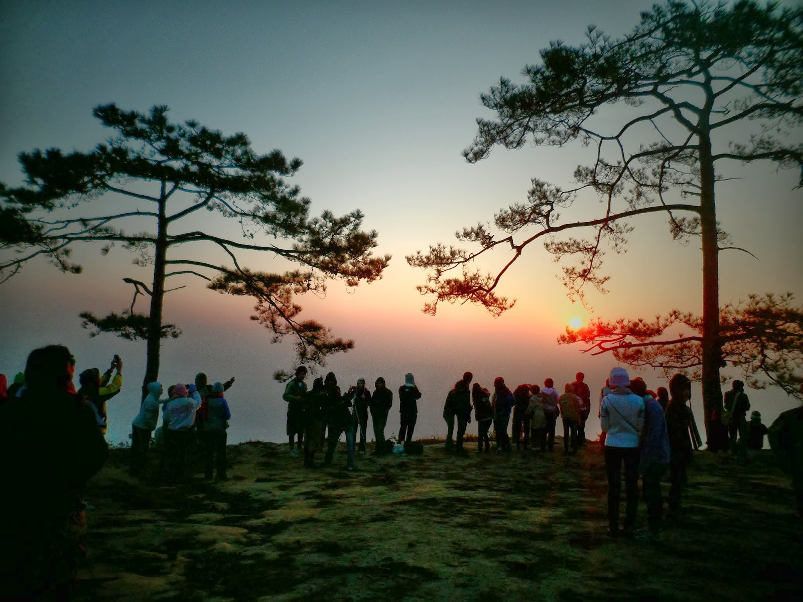
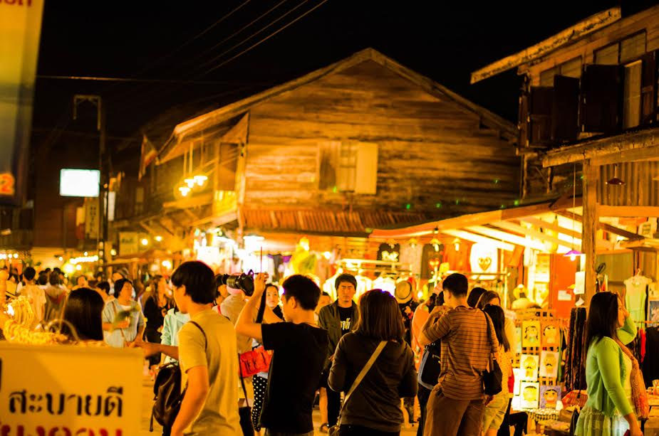

จังหวัดเลย
คำขวัญประจำจังหวัด
เมืองแห่งทะเลภูเขา สุดหนาวในสยาม ดอกไม้งามสามฤดูถิ่นที่อยู่อริยสงฆ์ มั่นคงความสะอาด
เลย เป็นจังหวัดหนึ่งในภาคตะวันออกเฉียงเหนือตอนบน ประเทศไทย มีพื้นที่ทั้งหมด 11,424.612 ตารางกิโลเมตร หรือ 7,140,382 ไร่ หรือประมาณร้อยละ
6.77 ของพื้นที่ในภาคตะวันออกเฉียงเหนือ สภาพภูมิศาสตร์ของจังหวัดเลยเป็นที่ราบสูง มีภูเขาสูงกระจัดกระจาย มีสภาพภูมิประเทศที่งดงาม
ทางทิศตะวันตกและทางด้านใต้ของจังหวัด ห่างจากกรุงเทพมหานครประมาณ 520 กิโลเมตร ทั้งนี้ยังมีแหล่งน้ำสำคัญคือแม่น้ำโขง ในบริเวณตอนบนของจังหวัด
อากาศหนาวเย็น เป็นแหล่งเพาะปลูกไม้ดอกไม้ประดับที่สำคัญแห่งหนึ่งของประเทศ และยังเป็นเมืองท่องเที่ยวที่สำคัญ
ภูกระดึง ขุนเขามหัศจรรย์แห่งเมืองเลย
"ภูกระดึง"" หรือ "อุทยานแห่งชาติภูกระดึง" ตั้งอยู่ที่อำเภอภูกระดึงในจังหวัดเลย เป็นเช่นนี้ก็เพราะการที่เราจะขึ้นไปถึงยอดดอยได้ต้องเดินเท้าเป็นระยะทางกว่า
9 กิโลเมตร คือขึ้นเขา 5 กิโลเมตรบวกทางราบอีกประมาณ 3-4 กิโลเมตร (โห...ไหวไหมเนี่ย) ภูกระดึง เป็นหนึ่งในแหล่งท่องเที่ยวที่มีชื่อเสียงมากที่สุดของประเทศไทย
เนื่องจากมีธรรมชาติที่สวยงาม ในแต่ละปีจึงมีคนมาเที่ยวเฉลี่ยหลายหมื่นคน ในช่วงปลายเดือนตุลาคม หรือช่วงปลายฤดูฝน น้ำตกบน
ภูกระดึงจะงดงามมาก และบนยอดภูกระดึงยังมีจุดชมวิวยามเช้าที่สวยงาม ความงดงาม ของแสงสีแดง ขณะเริ่ม จับขอบฟ้า จะทำให้ทุกคน
ยิ้ม มีความสุข ลืมความเหน็บหนาวกันเลยทีเดียวค่ะ

พิสูจน์รักแท้…แค่พิชิตผู้กระดึง มีคู่รักหลายคู่ที่ร่วมพิสูจน์รักแท้ด้วยการเดินทางพิชิตยอดภูของ อุทยานแห่งชาติภูกระดึง และถ้าหากเขาคนนั้นสามารถร่วมเดินทางไปกับคุณจนกระทั่งถึงยอดดอย
และคอยช่วยเหลือดูแลกันและกันเป็นอย่างดีแล้วละก็ เขาก็คือรักแท้ของเราเป็นแน่แท้!!! ซึ่งนอกจากจะมีคู่รักไปพิสูจน์รักแท้แล้ว
ภูกระดึง มักจะได้รับความนิยมในการไปแบบกลุ่มเพื่อน ๆ อีกด้วยและทุกคนที่ได้ไปสัมผัสต่างพูดเป็นเสียงเดียวกันว่า ตอนเดินเหนื่อยมาก
ๆแต่พอได้ไปสัมผัสกับธรรมชาติข้างบน ภูกระดึง แล้วคุ้มค่าสุด ๆ อยากรู้ว่าจะบรรยากาศจะฟินขนาดไหนฤดูหนาวนี้ไปพิชิตภูกระดึงกันนะค่ะ
ฤดูหนาวนี้ที่เชียงคาน...

ถนนคนเดินเชียงคาน ตลอดแนวบนถนนชายโขงตั้งแต่ซอย 5 จนถึงซอย 20 ทุกเย็นยํ่าจนถึงประมาณสี่ทุ่ม ใครต่อใครสามารถเดินดื่มด่ำบรรยากาศ
เชียงคาน เป็นอำเภอหนึ่งในจังหวัดเลย ตั้งอยู่ริมแม่น้ำโขง ในปัจจุบันเป็นเมืองโบราณที่เก่าแก่ในสายตานักท่องเที่ยว เป็นชุมชนที่มีความเป็นเอกลักษณ์เฉพาะตัวมายาวนานกว่า
100 ปี โดยมีบ้านไม้เก่าๆ ร้านกาแฟ ร้านอาหาร ร้านขายของที่ระลึก เท่านั้น แต่กลับมีนักท่องเที่ยวทั้งชาวไทย และชาวต่างชาติ
เดินเที่ยวกันเต็มไปหมด อาจจะด้วยเพราะเมืองเชียงคานนี้เงียบสงบ บรรยากาศดี เหมาะกับการใช้ชิวิตวิถี Slow life และด้วยการที่เชียงคานยังคงความเป็นเอกลักษณ์แต่ผสมผสานกับความเป็นสมัยใหม่ที่ไม่มากจนเกินไปได้อย่างลงตัวในแบบฉบับของเชียงคาน
ผู้คนส่วนใหญ่ที่ไปเที่ยวก็จะมีกิจกรรมมากมายให้ได้ทำกันนะค่ะ เช่น ปั่นจักรยาน เดินถ่ายรูป ที่ถนนคนเดินกับบ้านไม้เก่าๆ
และชมวิวแม่น้ำโขง เข้าวัด ไห้วพระ เชียงคานมีวัดอยู่ 3 วัด ใกล้ๆ กับถนนคนเดิน ได้แก่วัดศรีคุณเมือง, วัดมหาธาตุ, วัดท่าคก
แวะทานอาหารพื้นเมือง ปลาแม่น้ำโขง, ข้าวเปียกญวน, อาหารอีสาน ตอนเช้าตักบาตรข้าวเหนียว เป็นวิถีชีวิตชาวเชียงคานที่มีมานานแล้ว
ข้อมูลติดต่อ
ททท. สำนักงานเลย
พื้นที่รับผิดชอบ: เลย,หนองบัวลำภู
ที่ว่าการอำเภอเมืองเลย (หลังเก่า) ถ.เจริญรัฐ ต.กุดป่อง อ.เมือง จ.เลย 42000
โทรศัพท์. 0-4281-2812 , 0-4281-1405
ข้อมูลผู้จัดทำ
นางสาวไพรสณฑ์ โสภา รหัสประจำตัว 5396014382